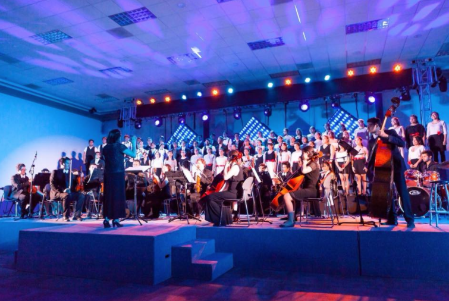

| ACERCA DE MI |
|---|
| Mi nombre es Daniel Elias pero mis amigos me dicen Dan. Tengo 20 años, soy de Querétaro y actualmente estudio el 4to semestre de Ingeniería en Sistemas Computacionales en el Tec de Monterrey Campus Querétaro. |
| HOBBIES Y PROYECTOS |
|---|
| Música: Se tocar el piano y la guitarra. También estoy en el grupo representativo de coro, por lo que me gusta cantar. Inclusive he intentado componer música. Link a mi Soundcloud |
 |
 |
Pintura y Arte Digital: Me gusta la pintura al acrílico u oleo, he tomado varias clases de artes plásticas. Asímismo, me gusta realizar arte digital y tomar fotografías. Link a mi Instagram |
| Porgramación: Me encanta programar y crear páginas web y aplicaciones, videojuegos y todo lo que involucra su proceso de creación. Link a mi Github |